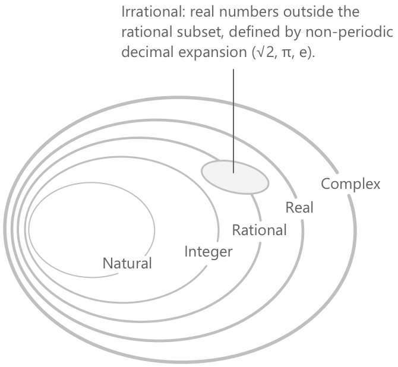

Типи чисел
Вступ
Математика організує числа у вкладені родини, кожна з яких розширює попередню, щоб охопити величини, які менша родина не може представити. Основні числові множини, перелічені в порядку включення, — це натуральні числа \(\mathbb{N},\) цілі числа \(\mathbb{Z},\) раціональні числа \(\mathbb{Q},\) дійсні числа \(\mathbb{R}\) та комплексні числа \(\mathbb{C}\). Ірраціональні числа \(\mathbb{I}\) займають доповняльне положення всередині \(\mathbb{R}\), а не утворюють окремий крок в ієрархії. Відносини включення між цими множинами є наступними.
\[ \mathbb{N} \subset \mathbb{Z} \subset \mathbb{Q} \subset \mathbb{R} \subset \mathbb{C}, \qquad \mathbb{I} \subset \mathbb{R} \]

Структура цих множин відображає прогресію алгебраїчної повноти: кожне розширення усуває обмеження попереднього, аж поки не буде досягнуто \(\mathbb{C}\), у якій кожне поліноміальне рівняння має розв'язання.
Натуральні числа
Множина натуральних чисел, що позначається \(\mathbb{N}\), є сукупністю невід'ємних цілих чисел, які використовуються для підрахунку дискретних величин.
\[ \mathbb{N} = \{0, 1, 2, 3, 4, \ldots\} \]
Кожен елемент отримують, додаючи одиницю до попереднього, починаючи з \(0\). Оскільки натуральні числа виражають, скільки елементів містить сукупність, їх також називають кількісними числами. Питання про те, чи належить нуль до \(\mathbb{N}\), є питанням конвенції, що варіюється залежно від традиції; два найпоширеніші варіанти наведені нижче:
\[\mathbb{N}_0 = \{0, 1, 2, 3, \ldots\}\] \[ \mathbb{N}^+ = \{1, 2, 3, \ldots\}\]
З фундаментальної точки зору, \(\mathbb{N}\) є найменшою індуктивною множиною, що міститься в \(\mathbb{R}\): вона містить \(0\) і, якщо вона містить елемент \(n\), то також містить \(n+1\). Ця властивість є основою принципу математичної індукції.
Цілі числа
Множина цілих чисел, що позначається \(\mathbb{Z}\), розширює \(\mathbb{N}\) шляхом додавання від'ємного відповідника до кожного додатного натурального числа:
\[ \mathbb{Z} = \{\ldots, -3, -2, -1, 0, 1, 2, 3, \ldots\} \]
Кожне ціле число є або додатним, або від'ємним, або нулем. Множину \(\mathbb{Z}\) можна представити як об'єднання натуральних чисел та їхніх від'ємних значень:
\[ \mathbb{Z} = \mathbb{N} \cup \{-n : n \in \mathbb{N}^+\} \]
Перехід від \(\mathbb{N}\) до \(\mathbb{Z}\) робить віднімання завжди визначеним: для будь-яких \(a, b \in \mathbb{Z}\) різниця \(a - b\) знову є цілим числом. Окремий розділ детально описує властивості цілих чисел.
Раціональні числа
Множина раціональних чисел, що позначається \(\mathbb{Q}\), складається з усіх чисел, які можуть бути представлені як відношення двох цілих чисел з ненульовим знаменником:
\[ \mathbb{Q} = \left\{ \frac{p}{q} : p, q \in \mathbb{Z},\; q \neq 0 \right\} \]
Кожне ціле число є раціональним, оскільки будь-яке \(n \in \mathbb{Z}\) можна записати як \(n/1\). Десятковий запис раціонального числа є або скінченним, або зрештою періодичним: наприклад, \(1/4 = 0.25\) та \(1/3 = 0.333\ldots\) Нижче наведено подальші приклади раціональних чисел.
\[ \frac{-5}{4}, \quad \frac{12}{7}, \quad -8, \quad \frac{25}{19} \]
Перехід від \(\mathbb{Z}\) до \(\mathbb{Q}\) робить ділення на будь-яке ненульове ціле число завжди визначеним.
Ірраціональні числа
Дійсне число називається ірраціональним, якщо його не можна представити як відношення двох цілих чисел. Множина ірраціональних чисел позначається \(\mathbb{I}\) і задовольняє рівність \(\mathbb{R} = \mathbb{Q} \cup \mathbb{I}\) при \(\mathbb{Q} \cap \mathbb{I} = \emptyset\). Десятковий запис ірраціонального числа є нескінченним і неперіодичним. Відомі приклади включають наступні.
\[ \sqrt{2}, \quad \sqrt{3}, \quad \pi, \quad e, \quad -\sqrt[3]{5} \]
Ірраціональність \(\sqrt{2}\) є одним із найдавніших результатів у математиці та має лаконічне доведення від супротивного: припущення \(\sqrt{2} = p/q\) у найпростішому вигляді призводить до висновку, що і \(p\), і \(q\) є парними, що суперечить припущенню. Числа \(\pi\) та \(e\) є ірраціональними, але належать до подальшого особливого класу: вони є трансцендентними, що означає, що вони не є коренями жодного ненульового полінома з раціональними коефіцієнтами.
Дійсні числа
Множина дійсних чисел, що позначається \(\mathbb{R}\), є об'єднанням раціональних та ірраціональних чисел.
\[ \mathbb{R} = \mathbb{Q} \cup \mathbb{I} \]
Перехід від \(\mathbb{Q}\) до \(\mathbb{R}\) заповнює прогалини, залишені раціональними числами, гарантуючи, що кожна збіжна послідовність має границю в цій множині. Кожне дійсне число має десяткове представлення наступного вигляду.
\[ \left\{ p,\alpha_0\alpha_1\alpha_2\alpha_3\ldots : p \in \mathbb{Z},\; \alpha_k \in \{0,1,2,\ldots,9\},\; \forall\,k \in \mathbb{N} \right\} \]
У цьому представленні компоненти інтерпретуються наступним чином:
- \(p \in \mathbb{Z}\) — це ціла частина, яка може бути додатною, від'ємною або дорівнювати нулю.
- \(\alpha_0, \alpha_1, \alpha_2, \ldots\) — це десяткові цифри, кожна з яких належить до \({0, 1, \ldots, 9}\).
- Індекс \(k \in \mathbb{N}\) набуває значень усіх натуральних чисел, тому десятковий розклад продовжується нескінченно.
Для раціональних чисел десятковий розклад зрештою стає періодичним. Для ірраціональних чисел він є нескінченним і неперіодичним.
Геометрично \(\mathbb{R}\) відповідає точкам неперервної прямої, числовій прямій дійсних чисел, без жодних прогалин.

Повнота — це те, що відрізняє \(\mathbb{R}\) від \(\mathbb{Q}\): наприклад, послідовність раціональних наближень до \(\sqrt{2}\) не має границі в \(\mathbb{Q}\), але її границя існує в \(\mathbb{R}\). Тема найменших верхніх меж розглянута в статті про супремум та інфімум.
Множина \(\mathbb{R}\) також є повністю впорядкованою: для будь-яких двох дійсних чисел \(x\) та \(y\) виконується рівно одне з відношень \(x < y\), \(x = y\) або \(x > y\). Більше того, \(\mathbb{R}\) задовольняє архімедову властивість: для кожного дійсного числа \(x\) існує натуральне число \(n\), таке що \(n > x\). Це виключає існування нескінченно великих або нескінченно малих елементів у \(\mathbb{R}\).
Подальша структурна відмінність відокремлює \(\mathbb{Q}\) від \(\mathbb{R}\) на рівні потужності. Раціональні числа утворюють зліченну множину, що означає, що їхні елементи можна встановити в однозначну відповідність з \(\mathbb{N}\). Дійсні числа, навпаки, є незліченними: такої відповідності не існує, що було доведено діагональним методом Кантора. У цьому точному сенсі ірраціональні числа становлять переважну більшість дійсної прямої. Властивості системи дійсних чисел детальніше обговорюються в статті про властивості дійсних чисел.
Оскільки нуль не має знака, він не належить ні до додатних, ні до від'ємних дійсних чисел. З цієї причини стандартною є наступна термінологія: невід'ємне дійсне число задовольняє умову \(x \geq 0\), тоді як недодатне дійсне число задовольняє \(x \leq 0\).
Комплексні числа
Множина комплексних чисел, що позначається \(\mathbb{C}\), розширює \(\mathbb{R}\) шляхом введення елемента \(i\), що задовольняє умову \(i^2 = -1\). Кожне комплексне число має вигляд
\[ z = a + bi \]
де \(a\) та \(b\) — дійсні числа, які називаються відповідно дійсною та уявною частинами \(z\). Коли \(b = 0\), число зводиться до дійсного числа, отже \(\mathbb{R} \subset \mathbb{C}\). Коли \(a = 0\) та \(b \neq 0\), число називається чисто уявним.
Перехід до \(\mathbb{C}\) дозволяє добувати квадратні корені з від'ємних чисел і, загалом, повністю розкладати кожен поліном: згідно з основною теоремою алгебри, кожен несталий поліном з комплексними коефіцієнтами має принаймні один корінь у \(\mathbb{C}\). Ця властивість замкненості відсутня у \(\mathbb{R}\): наприклад, поліном \(x^2 + 1\) не має дійсних коренів. Повний опис комплексних чисел наведено в статті про комплексні числа.